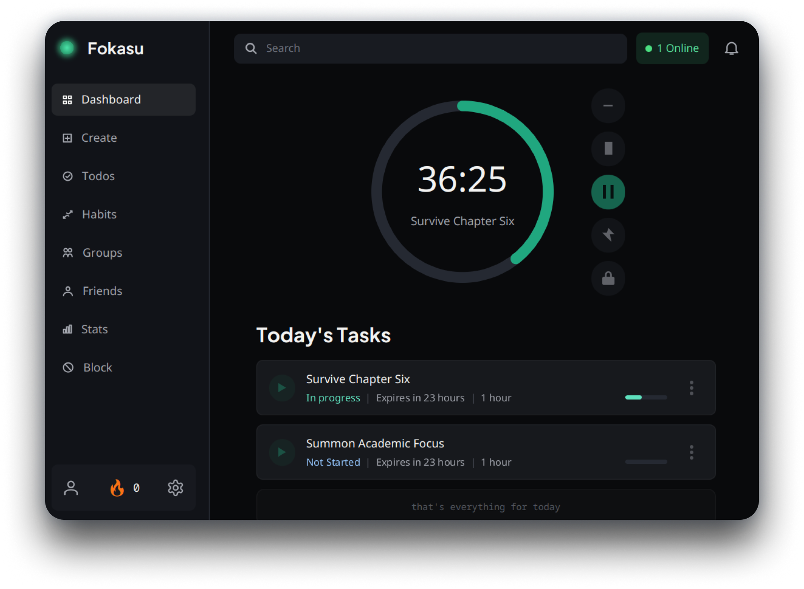
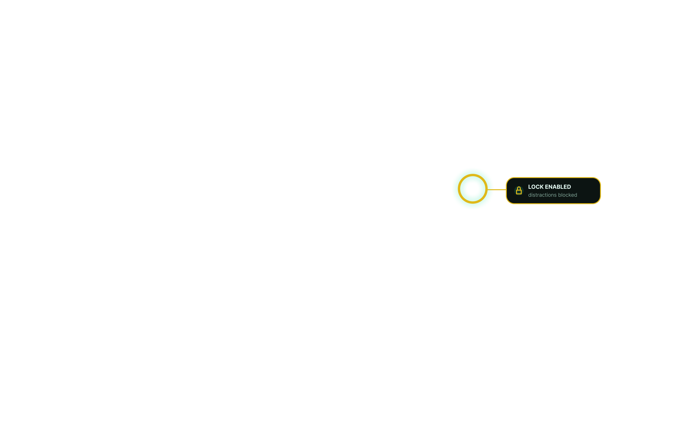
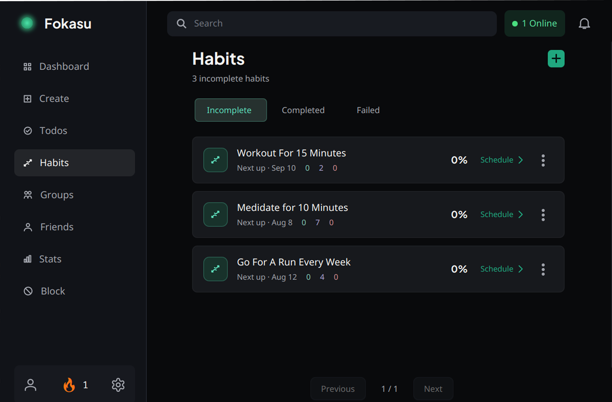
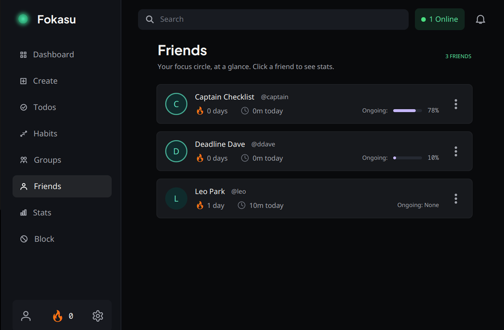

Plan your task
then lock distractions out
Quick task planning
Lock todos until done
Distractions fade away


Block stays put
Even after a restart, distractions stay locked out.

Build a rhythm
Make progress a habit.
Set recurring routines, see what’s next, and keep the next small win in reach.

Make progress together
Turn shared goals into finished work.
Create a group, set the goal, and keep every task moving toward the finish line.

Stay accountable
Keep your circle moving.
See your friends’ progress at a glance, share the momentum, and stay motivated to finish what you started.
